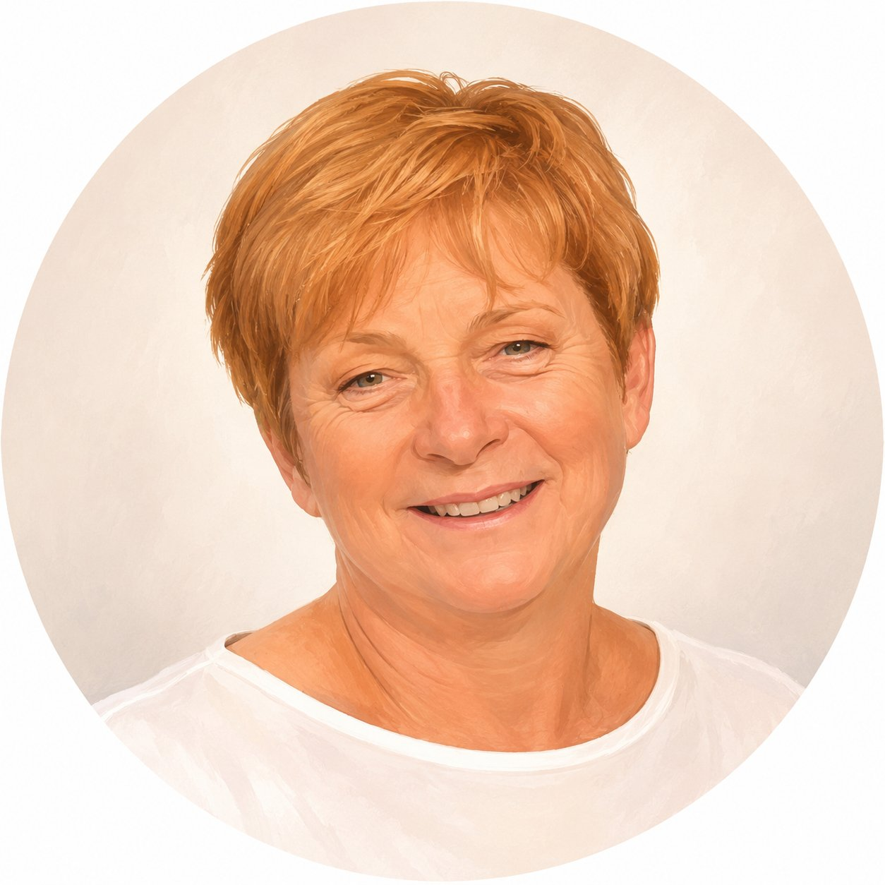
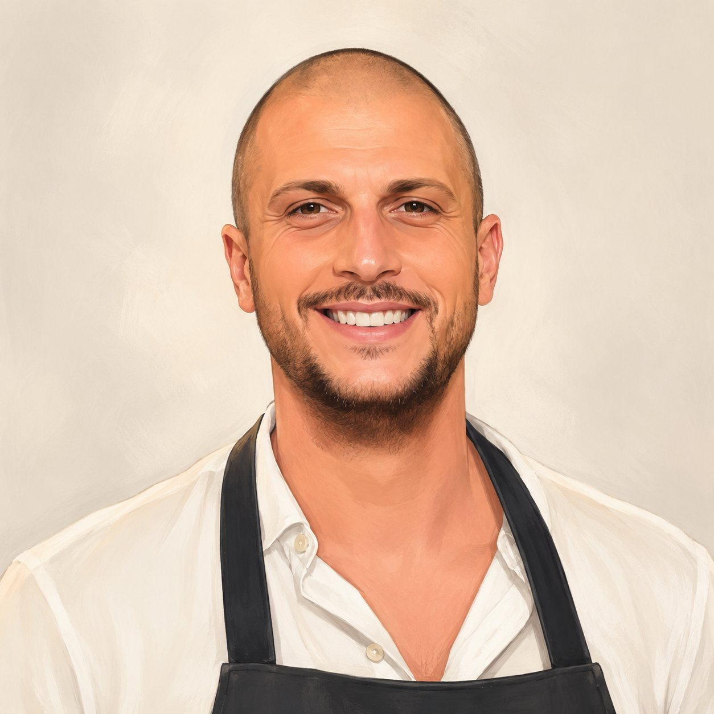
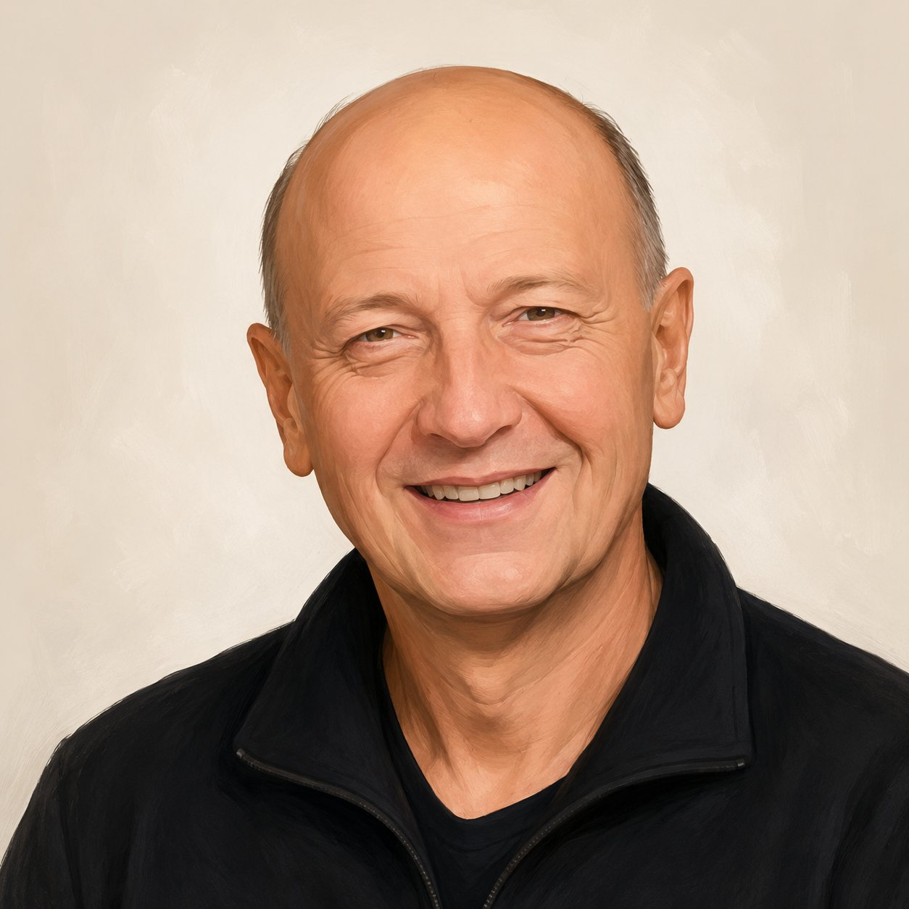

12,50 €
Lasagne al forno
Le facciamo la mattina. Quando finiscono, finiscono.
Prato · Mezzana · dal MCMXCIX
Una bottega di famiglia. Paola e Rossana in cucina. Gianni, Lorenzo e Alessio al banco. In via Catani, dal 1999. Pata Negra, mortadella di Prato, il Carmignano della tenuta di Capezzana.
Da venticinque anni
Lavoriamo come sempre. Scegliamo a uno a uno. Tagliamo a mano. Cuciniamo la mattina. Conosciamo i nostri clienti per nome.Qualità, trasparenza, rispetto per il tempo delle cose buone. Conosciamo chi le fa, uno per uno. Le scegliamo per voi.
12,50 €
Le facciamo la mattina. Quando finiscono, finiscono.
18,00 €
Maiali iberici al pascolo brado, stagionatura 36 mesi.
8,50 €
Coriandolo, pistacchi, l'amarena dell'Alkermes.
14,00 €
Taglio rosato al cuore, cottura lenta. Servito a fette sottili.
6,00 €
Rosolate con rosmarino e olio toscano. Il contorno che va con tutto.
22,00 €
La denominazione storica del territorio pratese.
In via Catani, dal 1999. Dalle dodici alle due e mezza qui passa metà del quartiere: artigiani, impiegati, professionisti, e chi torna a casa col cestino.
Le lasagne calde di Paola e Rossana. La schiacciata appena uscita. Il bicchiere di Carmignano per chi torna al lavoro, e quello di Champagne per chi se lo merita.
Dietro ogni prosciutto, ogni vino, ogni formaggio c'è un produttore preciso, una zona, una storia. Li abbiamo scelti uno per uno.
Toscana · Carmignano (Prato)
Il vino del nostro territorio. Tenuta di Capezzana: una delle prime denominazioni d'origine del mondo, dal 1716, voluta dal Granduca Cosimo III.
Toscana · Prato
Ricetta del Cinquecento, presidio del nostro territorio. Coriandolo, pistacchi, l'amarena dell'Alkermes. Selezionata dai macellai pratesi storici.
Toscana · San Miniato
Il bianco pregiato della Toscana centrale. Stagione ottobre–dicembre, scavato a mano dai cavatori che conosciamo. Mai congelato.
E un'eccellenza che abbiamo scelto
oltre il nostro territorio.
Spagna · Extremadura
Il prosciutto crudo più pregiato di Spagna. Maiali iberici allevati liberi nei boschi di querce, alimentati a ghiande. Stagionato trentasei mesi. Sapore di nocciola, grasso che si scioglie sulla mano prima di arrivare in bocca. Il nostro pezzo forte al banco.
Razza
Iberico puro
Alimentazione
Ghianda di leccio
Stagionatura
36 mesi minimo
La cucina di Paola e Rossana. Il banco di Gianni, Lorenzo e Alessio.
Sopra il banco, i prosciutti che hanno scelto loro. Dietro il banco, le lasagne che cucinano loro.

Titolare · Banco
Prosciutti, salumi, vini

Cucina
Lasagne, pasta al forno

Cucina
Lasagne, gastronomia

Banco · Selezione
Salumi, formaggi, vini

Banco · Selezione
Salumi, formaggi, vini
Sala · Servizio
Accoglienza dei clienti
Famiglia in arrivo
Il prossimo membro del team
Nel restyling firmato da Spazio29 abbiamo cambiato la luce, i materiali, la disposizione del banco — senza cambiare l'aria. Chi entra oggi riconosce subito la bottega di sempre, solo che ora è più chiara, più larga, più sua.
Per progetti con Spazio29
Il restyling della bottega è stato curato da Saverio · Spazio29.
328 818 8031Orari
Non facciamo cena: chiudiamo alle otto. Pranzo, merenda, aperitivo della casa, gastronomia d'asporto.